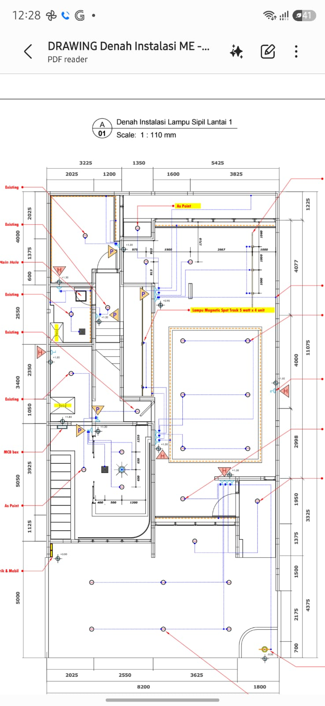
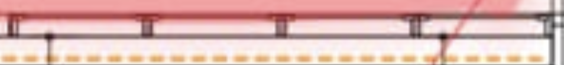
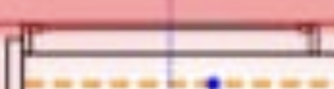
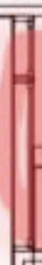

Opening Eldora House…
3D view · full-height walls

The full first floor is interpreted from the electrical drawing. Room uses and new opening sizes are provisional. The close-ups show frontage details. The short return is a solid wall; the long frontage has a fixed window, wall separator, and four sliding doors.



Enable JavaScript for the 3D viewer. Open the source floor plan.